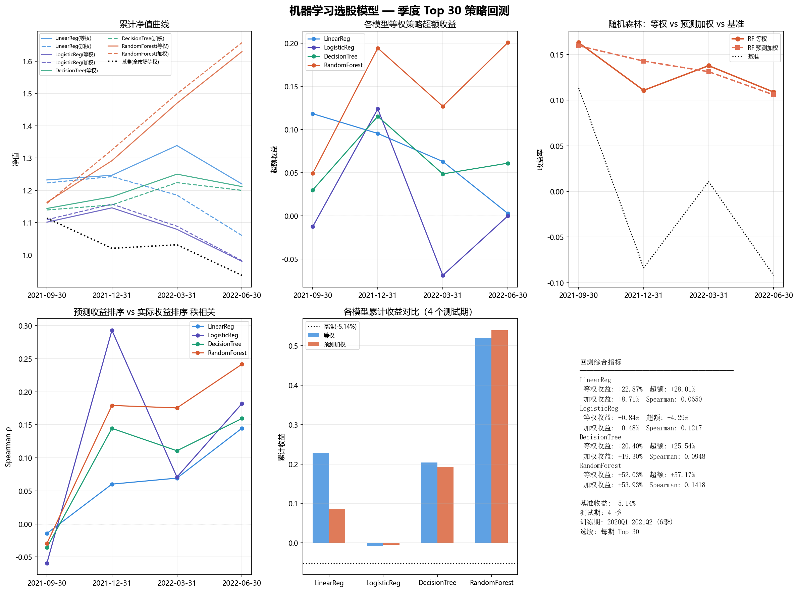
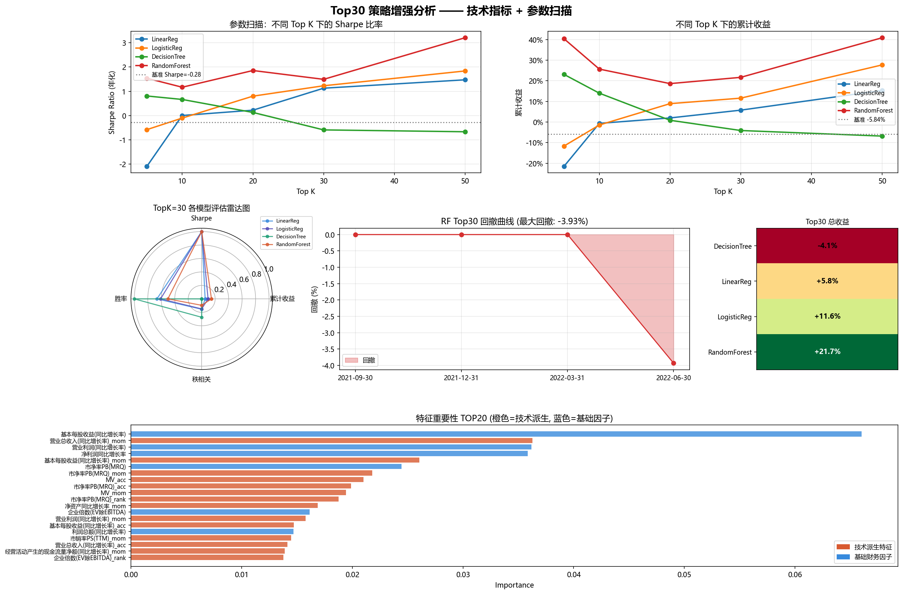

数据区间：2020Q1 – 2022Q2（共 10 个季度） · 4,281 只股票 · 19 个基础财务因子 + 60 个技术派生特征 = 79 维特征 · 训练 6 期 / 测试 4 期 · 每期选 Top 30
收益为测试期（4 个季度）等权累计；超额 = 收益 − 基准（基准累计 -5.14%）。
| 模型 | 等权累计 | 等权超额 | 加权累计 | 加权超额 | Spearman |
|---|---|---|---|---|---|
| 线性回归 (LinearReg) | +22.87% | +28.01% | +8.71% | +13.85% | 0.0650 |
| 逻辑回归 (LogisticReg) | -0.84% | +4.30% | -0.48% | +4.66% | 0.1217 |
| 决策树 (DecisionTree) | +20.40% | +25.54% | +19.30% | +24.44% | 0.0948 |
| 随机森林 (RandomForest) | +52.03% | +57.17% | +53.93% | +59.07% | 0.1418 |
| 测试期 | 基准 | 线性回归 | 逻辑回归 | 决策树 | 随机森林 |
|---|---|---|---|---|---|
| 2021-09-30 | +11.36% | +23.21% | +10.14% | +14.38% | +16.30% |
| 2021-12-31 | -8.37% | +1.18% | +4.03% | +3.16% | +11.07% |
| 2022-03-31 | +1.07% | +7.38% | -5.81% | +5.94% | +13.78% |
| 2022-06-30 | -9.20% | -8.90% | -9.20% | -3.08% | +10.88% |
基准累计 -5.84% · 基准 Sharpe -0.28。最优配置：RandomForest TopK=50（收益 +40.91% / Sharpe 3.21）。
| 模型 | TopK | 累计收益 | Sharpe | 最大回撤 | 胜率 | Spearman |
|---|---|---|---|---|---|---|
| 随机森林 (RandomForest) | 50 | +40.91% | 3.21 | -0.10% | 75% | 0.143 |
| 随机森林 (RandomForest) | 20 | +18.66% | 1.86 | -2.56% | 75% | 0.143 |
| 逻辑回归 (LogisticReg) | 50 | +27.73% | 1.84 | -4.02% | 75% | 0.183 |
| 随机森林 (RandomForest) | 5 | +40.44% | 1.54 | -3.09% | 50% | 0.143 |
| 随机森林 (RandomForest) | 30 | +21.69% | 1.49 | -3.93% | 75% | 0.143 |
| 线性回归 (LinearReg) | 50 | +15.37% | 1.47 | -0.74% | 75% | 0.174 |
| 逻辑回归 (LogisticReg) | 30 | +11.60% | 1.23 | -4.71% | 75% | 0.183 |
| 随机森林 (RandomForest) | 10 | +25.70% | 1.17 | -5.41% | 50% | 0.143 |
| 线性回归 (LinearReg) | 30 | +5.78% | 1.13 | -2.64% | 75% | 0.174 |
| 决策树 (DecisionTree) | 5 | +23.13% | 0.81 | -7.02% | 50% | 0.068 |
| 逻辑回归 (LogisticReg) | 20 | +8.93% | 0.80 | -5.14% | 50% | 0.183 |
| 决策树 (DecisionTree) | 10 | +14.02% | 0.66 | -3.98% | 25% | 0.068 |
| 线性回归 (LinearReg) | 20 | +2.01% | 0.22 | -5.94% | 50% | 0.174 |
| 决策树 (DecisionTree) | 20 | +0.88% | 0.13 | -4.72% | 25% | 0.068 |
| 线性回归 (LinearReg) | 10 | -0.64% | 0.00 | -7.62% | 50% | 0.174 |
| 逻辑回归 (LogisticReg) | 10 | -1.44% | -0.10 | -8.07% | 75% | 0.183 |
| 逻辑回归 (LogisticReg) | 5 | -11.65% | -0.58 | -11.79% | 25% | 0.183 |
| 决策树 (DecisionTree) | 30 | -4.10% | -0.59 | -4.12% | 25% | 0.068 |
| 决策树 (DecisionTree) | 50 | -6.81% | -0.67 | -8.17% | 50% | 0.068 |
| 线性回归 (LinearReg) | 5 | -21.50% | -2.10 | -13.00% | 25% | 0.174 |

